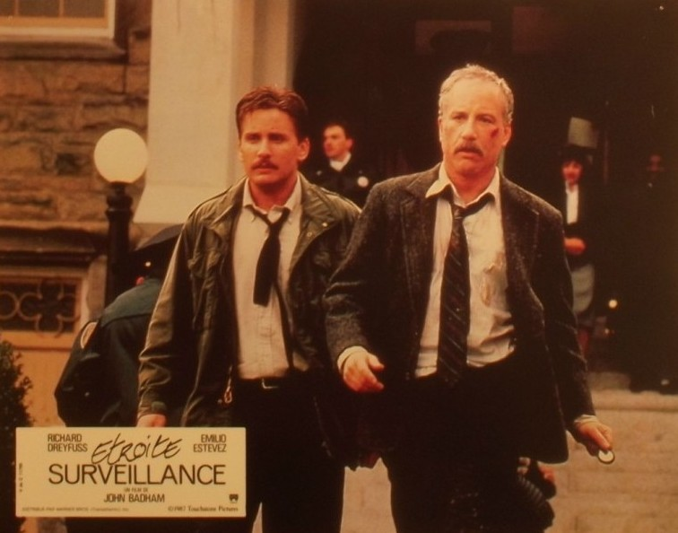
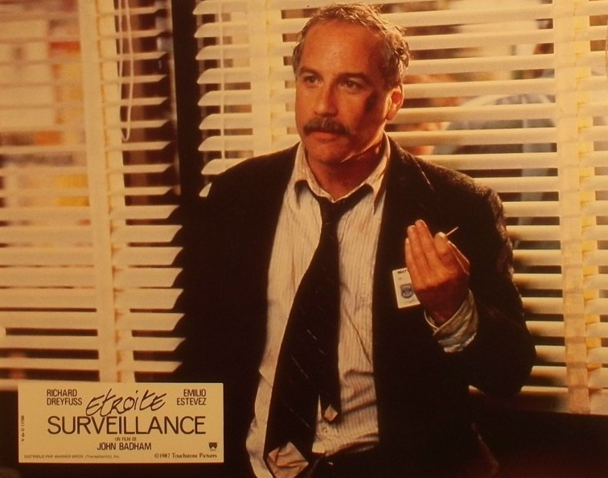
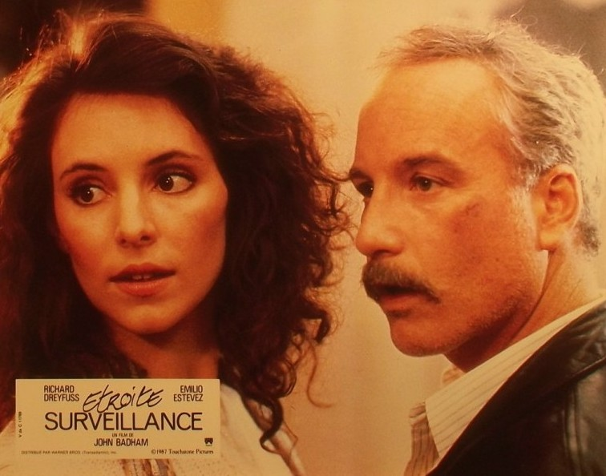

Sommaire8 sections
Mon grand-père avait acheté deux cassettes en VHS : Étroite surveillance, et sa suite. J'avais une douzaine d'années.
Je ne me souviens pas de chaque scène. Je me souviens de l'impression : deux films burlesques, avec une pointe d'action, et surtout un duo qui m'avait tout de suite marqué. Un type avec une moustache, et un jeune flic qui lui dit de ne pas faire de conneries. Deux hommes qui guettent depuis la maison d'en face. Richard Dreyfuss et Emilio Estevez.
Dès le premier film, je m'étais attaché à eux. Quand la suite est arrivée, je les ai retrouvés comme on retrouve deux vieux amis.
Des années plus tard, je les ai revus. Et j'ai adoré. J'ai passé une excellente soirée en compagnie de Dreyfuss et d'Estevez, comme si le temps n'avait pas passé.
Ce soir, on surveille.

Emilio Estevez et Richard Dreyfuss dans Étroite surveillance (1987)
Étroite surveillance sort aux États-Unis le 5 août 1987, sous le titre original Stakeout. C'est un film de John Badham, produit par Touchstone Pictures, le label de Disney pour un public plus adulte, avec Silver Screen Partners II. Le scénario est de Jim Kouf, la musique d'Arthur B. Rubinstein.
À Seattle, deux inspecteurs reçoivent une mission de routine : surveiller Maria McGuire, l'ex-petite amie d'un prisonnier évadé, parce qu'il pourrait revenir la voir. Richard Dreyfuss joue Chris Lecce, un policier en plein divorce. Emilio Estevez joue Bill Reimers, son collègue, plus jeune, qui garde les pieds sur terre. Madeleine Stowe incarne Maria, et Aidan Quinn le fugitif.
Forest Whitaker, Dan Lauria et Earl Billings complètent la distribution.
Le point de départ est simple : surveiller, attendre, et regarder. Mais Chris se met à faire plus que regarder : pour s'approcher de Maria, il se fait passer pour un technicien du téléphone. La surveillance se complique alors.
C'est un film policier qui mêle comédie, romance et thriller, porté par le duo Richard Dreyfuss et Emilio Estevez.
Étroite surveillance arrive en 1987 dans une carrière que Richard Dreyfuss est en train de relancer. Après Rencontres du troisième type et Goodbye Girl, il a connu des années plus creuses, et le film de Badham est le troisième de ses films produits par Touchstone en un peu plus d'un an, après Down and Out in Beverly Hills et Tin Men.
Le scénario est de Jim Kouf, qui produit aussi le film avec Cathleen Summers. Il vaudra à Kouf un Edgar Award en 1988. À la réalisation, John Badham, un vrai faiseur de films d'action et de suspense.
L'histoire se passe à Seattle, mais le film est tourné à Vancouver, au Canada. Le tournage commence en janvier ou début février 1987 et dure à peu près deux mois et demi. Il coûte 14,5 millions de dollars. À l'écran, on aperçoit même le site de l'Expo 86.
Le film sort le 5 août 1987 sur 951 écrans. Il prend la première place du box-office américain, puis la garde cinq semaines de suite. Il termine avec environ 65 millions de dollars de recettes, soit près de cinq fois son budget, et huitième plus gros succès de l'année aux États-Unis.
La critique salue l'alchimie entre Dreyfuss et Estevez : 89 % d'avis positifs sur Rotten Tomatoes. Roger Ebert lui donne trois étoiles, en trouvant que le thriller violent s'accorde mal à la comédie.
Le succès appelle une suite, qui arrivera six ans plus tard.

Richard Dreyfuss dans Étroite surveillance (1987)
À Seattle, deux inspecteurs, Chris Lecce et Bill Reimers, sont affectés à la relève de nuit d'une planque. Ils doivent surveiller Maria McGuire, une serveuse dont l'ex-petit ami, Richard « Stick » Montgomery, s'est évadé de prison. Le FBI pense qu'il pourrait revenir la voir.
Chris est en plein divorce. Bill, lui, garde le cap. Les nuits sont longues, et ils passent leur temps à regarder, attendre, et plaisanter.
Mais Chris finit par se rapprocher d'elle. Pour l'approcher, il se fait passer pour un technicien du téléphone. Et la surveillance se complique : il tombe amoureux, la police commence à le soupçonner, et l'évadé n'est jamais loin.
Je m'arrête là : ce film se découvre mieux sans rien savoir de la suite.
Étroite surveillance tient sur une bonne idée : regarder, attendre, et trouver ça drôle. Roger Ebert l'a dit à sa manière, une bonne idée entourée d'une moins bonne.
La bonne idée, c'est le cœur du film. Richard Dreyfuss, arrogant, nerveux, toujours un peu trop sûr de lui, est de ces acteurs qu'on regarde même dans les passages lents. Chris se fait passer pour un technicien du téléphone, installe des écoutes, finit par mener l'enquête depuis la chambre de Maria. C'est la partie la plus plaisante du film.
Pendant ce temps, Emilio Estevez attend de l'autre côté de la rue. Un rôle ingrat sur le papier, mais ses réactions apportent une bonne part de l'humour, et le duo fonctionne comme une vieille amitié : ils se chamaillent, se taquinent, et on sent qu'ils s'apprécient. Un critique soupçonne que beaucoup de répliques ont été improvisées. La source ne le prouve pas, mais on a effectivement cette impression.
Le film est moins à l'aise ailleurs : la première et la dernière partie virent au thriller violent, et cette brutalité s'accorde mal avec la comédie. C'est le principal reproche des critiques, qui voyaient aussi dans les poursuites et les fusillades quelque chose de routinier.
Reste un bon film de duo, mené par Badham sans faute de goût, et l'un de ces films de flics qui ne sont ni mécaniques ni oubliables.

Madeleine Stowe et Richard Dreyfuss dans Étroite surveillance (1987)
Étroite surveillance n'est pas un film oublié parce qu'il aurait raté son public. C'est même le contraire. Sorti le 5 août 1987, il prend la première place du box-office américain et la garde cinq semaines. Il termine huitième plus gros succès de l'année, avec 14,5 millions de dollars de budget pour plus de 65 millions de recettes.
Alors pourquoi on en parle si peu ? D'abord parce qu'il se range dans une famille bien remplie : celle des duos de flics des années 80. Un film malin, drôle et efficace, mais qui n'a ni le culte ni la marque d'autres films du genre.
Ensuite parce que sa suite, Indiscrétion assurée, est arrivée six ans plus tard, en 1993, et a fait beaucoup moins bien : 30 millions de dollars de budget, moins de 30 millions de recettes dans le monde, et 16 % d'avis positifs sur Rotten Tomatoes. Après ça, la série s'arrête. Les films suivants n'ont jamais été prévus.
Le duo Dreyfuss–Estevez n'est jamais revenu à l'écran. Un tandem qui avait fait rire, et qui s'est arrêté trop tôt.
Pour moi, c'est un film qui n'a pas disparu. Il s'est simplement un peu effacé, comme ces cassettes qu'on retrouve un jour au fond d'un tiroir.
Pourquoi le revoir ? D'abord pour le duo. Richard Dreyfuss et Emilio Estevez jouent deux policiers qui ressemblent à de vieux amis : ils se taquinent, se chamaillent, et on sent qu'ils s'apprécient. C'est ce qui a séduit la critique à l'époque, et ça tient toujours.
Ensuite pour la partie centrale, la meilleure : la planque. Chris qui se fait passer pour un technicien du téléphone, les écoutes, l'enquête menée depuis la chambre de Maria, pendant que Bill, de l'autre côté de la rue, lève les yeux au ciel. Roger Ebert lui-même y voyait le meilleur du film.
Et puis il y a un plaisir plus simple : un film de 1987 qui prend le temps de regarder deux hommes attendre, et d'en rire. Sans effets, sans surenchère. Un critique le décrit comme un film qui ne sera pas un classique, mais qui mérite d'être revu.
Pour moi, c'est une soirée en bonne compagnie. Je les ai revus récemment, et j'ai adoré.
Et si vous aimez le duo, la suite vous attend : c'est l'épisode suivant.
Étroite surveillance n'a pas disparu de ma mémoire. Mon grand-père avait acheté ce film en VHS, j'avais une douzaine d'années, et ce duo m'avait marqué dès le premier épisode.
C'est un film policier burlesque, avec un côté action, et deux acteurs qui s'entendent à merveille : Richard Dreyfuss et Emilio Estevez. Un succès en 1987, un peu effacé depuis, et qui mérite qu'on le sorte du tiroir.
Si vous cherchez une soirée simple, drôle, en bonne compagnie, laissez-lui sa chance.
Merci d'avoir regardé ce nouvel épisode de SOMEDAY. Et si vous aussi, vous avez découvert ce film en VHS, dites-le-moi : somedayvhs@outlook.fr.
La suite, Indiscrétion assurée, arrive dans le prochain épisode.
La cassette est dans le lecteur. On rembobine.
Titre original
Stakeout
Pays
États-Unis
Genre
Comédie policière · Thriller
Durée
117 min
Producteurs
Jim Kouf · Cathleen Summers
Avec aussi
Madeleine Stowe · Aidan Quinn · Forest Whitaker
Musique
Arthur B. Rubinstein
Note
Découvert vers 12 ans, en VHS, grâce à mon grand-père
SOMEDAY — S4 EP. 02